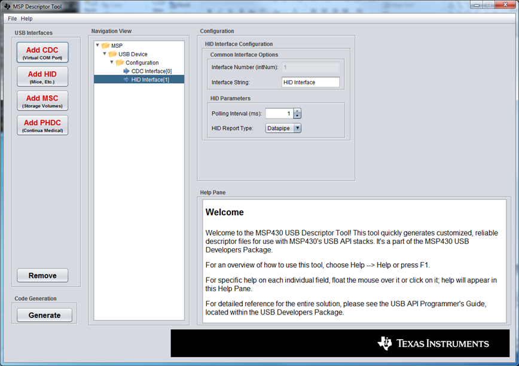
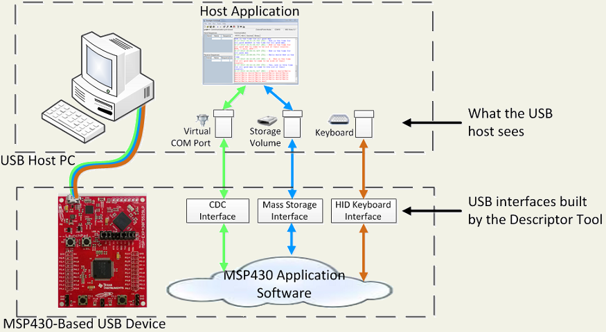
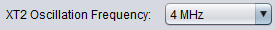
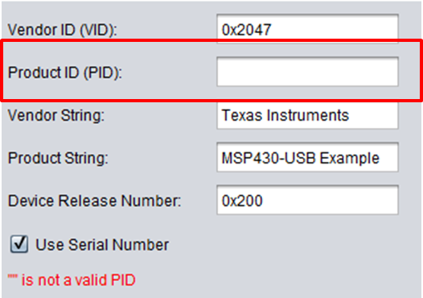
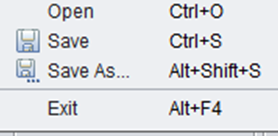
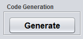
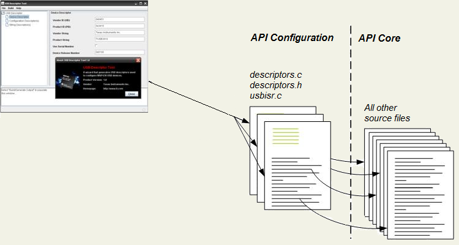
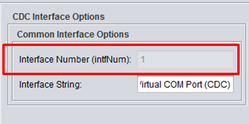
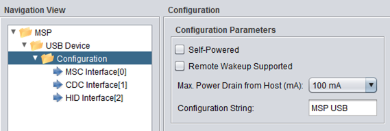

MSP430 USB Descriptor Tool
Welcome to the Descriptor Tool!
This is a quick overview of the Tool. For complete documentation, see the USB API Programmer's Guide in the MSP430 USB Developers Package.Also see the Help Pane, which shows specific help information for each of the Tool's input fields!

What
is the Tool?
The
Descriptor Tool generates a set of USB descriptors for your project. In
so doing, it also builds the USB interfaces
your application can use to interface with the host. After it runs, write your application to send/receive data over these interfaces. The USB examples and API Programmer's Guide show you how to do this.

What
is a "USB Interface"?
It's essentially a partitioned stream of data between the USB
device and the host. An interface is of a
particular device class, each with its own
protocol. The host responds differently for each device class:CDC (Comms Device Class): Presents a virtual COM port
HID (Human Interface Device): Subtypes include mice, keyboards, other PC peripherals, or simply "generic".
MSC (Mass Storage Class): Causes the host to mount a storage volume over this interface
PHDC (Personal Healthcare Device Class): Only used with Continua medical devices
The device tells the host what interfaces it contains by reporting the information in the USB descriptors. Most devices contain only a single interface, but some contain more; these are called composite USB devices.
The Descriptor Tool can quickly build descriptors for any combination of CDC, HID, and MSC interfaces, according to whatever your application needs.
What
are USB Descriptors?
When a USB device is enumerated on the host, the host polls for its USB descriptors. These communicate the
device's "identity", including which USB interfaces are supported, unique ID's, and
capabilities. In the MSP430 USB API, the descriptors are defined in the
files
descriptors.c/h.Besides the USB interfaces, the descriptors also define:
* ID codes called a "Vendor ID" (VID) and "Product ID" (PID). The host uses this to tell one kind of USB product from another.
* Text strings that describe the device, which might be presented to the user
* Power requirements (how much current the USB device will draw from the host)
The VID/PID pair is especially important. Once the host has seen a new VID/PID, it may cache information from the descriptors, so that it can recall it more quickly the next time. It indexes this information by VID/PID.
For this reason, every time you change the USB descriptors, it's a good idea to change the PID, or do an "uninstall"/"re-install" of the device on the host (for example, with the Windows Device Manager).
When
to Use the Tool?
Before you can write USB
code, you need to create your USB interfaces with the Tool. So, run
the Tool at the beginning of development. Later, you can modify and re-generate your output, provided you save your Tool inputs
to a *.dat file before you exit.
Quick Steps to Use
the Tool
Ultimately, when
you're wrapping up development of your product and finalizing the descriptors, you will want to pay attention
to every field in the Tool. But if you just want to get started quickly, here
are the minimum steps you need to do. 1) Select your interfaces, by pressing the buttons at the top.
2) Click on each node in the Navigation View's tree, filling out relevant information in each node. (Ignoring the items not listed below usually won't hurt basic functionality.)
a) MSP430 View --> XT2 Oscillator Frequency: The XT2 frequencies of 4MHz, 8MHz, 12MHz, 16MHz and 24MHz are detected automatically by the USB stack. Frequencies other than the once listed above need to be manually set (see Programmer's guide, Programmers_Guide_MSP430_USB_API.pdf for detailed steps)
b) USB Device View --> PID: The VID field is already filled out with TI-MSP430's VID, but you must enter a PID. The Help Pane text includes an"experimenter's range" of PIDs you can use.
c) HID interfaces: choose your device type (datapipe, mouse, keyboard, or custom)
d) MSC interfaces: choose the number of LUNs and whether the media is removable3) Save your *.dat input file. (File --> Save As...)

4)
Generate your output, by pressing the "Generate" button. Direct the output to your target
project. In the typical project structure for the USB API, these files
are usually stored in \USB_config. But they can go anywhere, as long as
the project's #include
settings are adjusted accordingly.
For each field, detailed instruction is provided in the Help Pane. (Float over the field or click on it to see the field's help text.)
The Tool's
Generated Output
The
Tool outputs four files:- descriptors.c
- descriptors.h
- usbisr.c (contains the USB interrupt service routine, and related functions)
- an INF file* (if one of the USB interfaces was CDC)
* Windows hosts need the user to provide an INF file (*.inf) for CDC interfaces. Windows uses INF files to associate devices with particular drivers, and for HID/MSC interfaces, the INF is included in Windows. For CDC it isn't. The INF contains specific information about the device, including its VID/PID and some strings. Since the Tool already has this information, it generates an INF file for you. Also note that if the device is composite, having more than one USB interface, the INF file is specific to that interface set. The Tool handles this for you.
The relationship between these output files and the rest of the MSP430 USB API is shown below.

How to Access These Interfaces from your Application
Every USB interface you define has an intfNum parameter. This is seen on each interface's view in the Tool:
This is relevant to composite devices involving CDC or HID interfaces. In these cases, it's important that the host and MSP430 application each understand how a device's interfaces are mapped, for proper communication. intfNum is the index you provide to function calls in the MSP430-side USB API, to help it understand which interface you're accessing.
For single-interface (non-composite) devices, the sole interface's intfNum is always zero.
There can only be one MSC interface in a USB device, so there is no intfNum parameter in the MSP430's MSC API calls. If MSC is used in composite, it's always reported as the first interface in the device, per USB requirements.
For every interface you define, the Tool places a constant in the descriptors.h file, like CDC0_INTFNUM or HID0_INTFNUM. You can use these as the intfNum parameter in your application code:
cdcSendDataInBackground(buf, size, CDC1_INTFNUM); // Sends data to the CDC interface with intfNum=1, the second CDC interface defined in this device
What is the USB Configuration?
The USB specification provides for a device to contain more than one USB configuration. Each configuration contains its own set of defined USB interfaces. The host can tell the device to change between its configurations.In practice, this feature is rarely used. As a result, the USB API and Descriptor Tool support only a single USB configuration.
Before sending a product to market, you need to report accurate information for this single configuration, in the USB Configuration view. But for evaluation/development purposes, it usually won't hurt to ignore these.

Trouble
Opening the Tool?
The
Tool requires Java Runtime Engine v1.6+ to run properly. As a
result, you may need to download the most recent version of the
JRE. The Tool is designed to automatically sense the JRE
version
on your machine upon being opened, and guide you to http://www.java.com
if
necessary.Due to Java limitations, the Tool may give an error upon being opened if there is a semicolon or space in the pathname, or if the pathname is very long. If the Tool fails to open, with an unclear error, please move the entire directory for the tool into a different path that addresses these two problems.